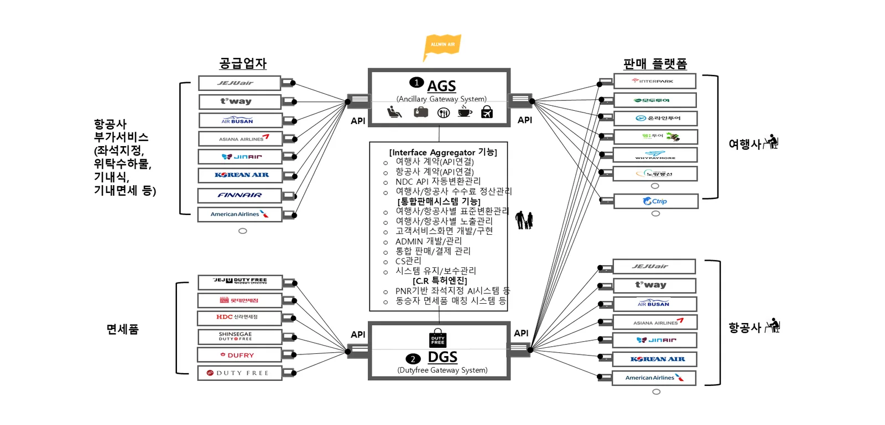

직접 연동하면 생기는 일
부가서비스는 항공사마다 API, 상품 구성, 가격 규칙, 환불 정책이 다릅니다. 여행사가 직접 연동하면 항공사 수만큼 개발해야 하고, 항공사가 시스템을 바꿀 때마다 다시 고쳐야 하며, 고객 문의와 정산도 직접 처리해야 합니다. 항공사도 여행사마다 따로 연결해야 합니다.
| 구분 | 항공사·여행사가 서로 직접 연동 | 올윈에어로 한 번 연동 |
|---|---|---|
| 개발 | 상대방 수만큼 개별 개발 | 올윈에어와 1회 연동 |
| 규격 차이 | 항공사별 API·NDC 규격을 각자 해석 | 올윈에어가 표준 규격으로 변환 |
| 유지보수 | 상대 시스템이 바뀔 때마다 각자 수정 | 올윈에어가 대응 |
| 판매 화면 | 각자 기획·개발 | 올윈에어 구매 화면 제공 또는 API 연동 선택 |
| 결제·정산 | 상대방마다 별도 정산 | 올윈에어가 통합 결제·정산 |
| 고객 CS | 판매처가 직접 응대 | 올윈에어 고객센터가 처리 |
| 서비스 추가 | 새 상품마다 추가 개발 | 올윈에어에 연결된 상품이 순차 추가 |
약 1/8여행사: 항공사별 직접 연동 대비 연동 리소스
약 1/20항공사: 여행사별 직접 연동 대비 연동 리소스
국내 항공사 8곳, 여행사 20곳과 제휴한다고 가정한 추정치 (2021년 제휴 제안 자료 중)
올윈에어가 책임지는 일

연결
- 항공사·공급사 API, NDC 연동
- 판매처 API 연결
- 공급처·판매처별 표준 변환
판매
- 고객용 구매 화면 개발·제공
- 판매처별 노출·상품 관리
- 통합 판매·결제 관리
운영
- 부가서비스 구매 고객 CS
- 공급처·판매처 정산
- 시스템 유지·보수, 관리자(ADMIN)
기술
- PNR 기반 AI 좌석추천
- 동승객 단위 상품 추천
- 구매 전환율(C.R.) 특허엔진
제휴사가 하는 일은 단순해집니다
- 올윈에어와 계약하고 연동 방식을 정합니다 (API 연동 또는 올윈에어 구매 화면 연결).
- 한 번 연동하고 테스트합니다.
- 판매를 시작합니다. 이후의 상품 추가, 항공사 변경 대응, CS, 정산은 올윈에어가 합니다.
자주 묻는 질문
- 올윈에어와 연동하면 항공사별로 따로 개발해야 하나요?
- 아니요. 올윈에어와 한 번만 연동하면 연결된 항공사·공급처의 부가서비스를 모두 판매할 수 있습니다. 새 항공사나 상품이 추가돼도 별도 개발이 거의 필요 없습니다.
- 부가서비스 고객 문의는 누가 처리하나요?
- 올윈에어 고객센터가 부가서비스 구매 고객의 문의와 변경·환불 응대를 처리합니다.
- 판매 화면을 직접 만들어야 하나요?
- 선택할 수 있습니다. 올윈에어가 제공하는 구매 화면을 연결하거나, API로 연동해 제휴사 화면에 직접 구성할 수 있습니다.
올윈에어와 연동을 시작하세요
항공사·부가서비스 공급사, 여행사·OTA·여행 플랫폼 모두 한 번의 연동으로 시작할 수 있습니다. 연동 방식과 일정은 제휴사 환경에 맞춰 협의합니다.
제휴 이메일partnership@allwin.co.kr
대표 연락처 (평일 09:00~18:00)1522-2284